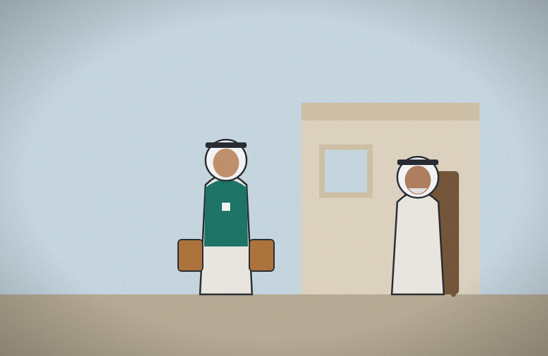
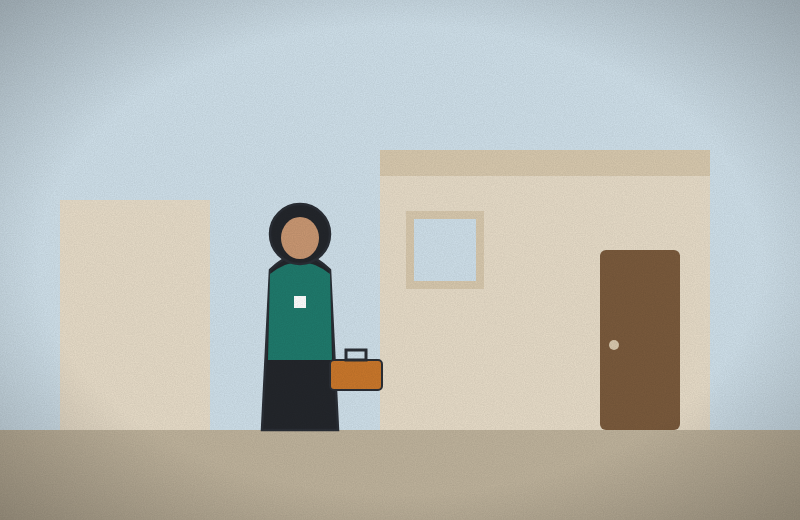
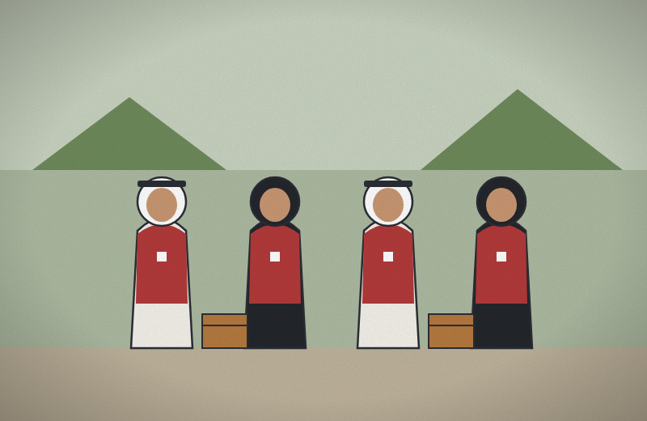
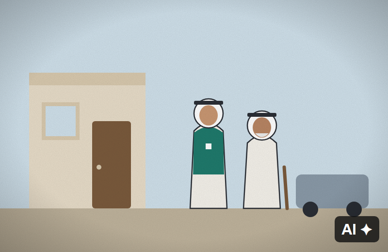

للتحقق · المختبر 2.4
بطاقات أدلة الصور الثماني
الصور رسوم مبسطة تمثّل صورًا وصلت إلى المكتب. ما يُفحص هو بطاقة كل صورة: من أين وصلت، وما قرأته أداة فحص بيانات اعتماد المحتوى، وما وجده البحث العكسي، وما قاله من سلّمها.
ص1 · I1.png

| البند | ما في البطاقة |
|---|---|
| وصلت من | مكتبة صور الهيئة |
| التعليق المقترح | براء المشوّح يوصل مشتريات أحد المستفيدين في أبها. تصوير: تيم الدغمي. |
| قراءة أداة الفحص | بيانات اعتماد المحتوى: موجودة، وتوقيعها سليم. الموقِّع: كاميرا الهيئة. نوع المصدر الرقمي: التقاط رقمي. لا تعديلات مسجّلة. |
| البحث العكسي عن الصورة | لا نتائج مطابقة. |
| مذكرة من سلّمها | من جلسة تصوير المرحلة التجريبية في أبها، 9 نوفمبر 2026. |
ص2 · I2.png
| البند | ما في البطاقة |
|---|---|
| وصلت من | المصمم الداخلي |
| التعليق المقترح | رسم توضيحي لخدمة «جِوار». |
| قراءة أداة الفحص | بيانات اعتماد المحتوى: موجودة، وتوقيعها سليم. الموقِّع: أداة التوليد المعتمدة. نوع المصدر الرقمي: وسائط مولّدة بخوارزمية مدرَّبة. |
| البحث العكسي عن الصورة | لا نتائج مطابقة. |
| مذكرة من سلّمها | ولّدتُها بأداة التوليد المعتمدة في 12 نوفمبر 2026. لا تمثّل أشخاصًا حقيقيين. |
ص3 · I3.png

| البند | ما في البطاقة |
|---|---|
| وصلت من | مكتبة صور الهيئة |
| التعليق المقترح | متطوعة تساعد في صيانة منزلية بسيطة في الرياض. |
| قراءة أداة الفحص | بيانات اعتماد المحتوى: موجودة، وتوقيعها سليم. نوع المصدر الرقمي: التقاط رقمي. تعديل مسجّل: إزالة عناصر من الخلفية بأداة توليدية (مركَّبة مع وسائط مولّدة). |
| البحث العكسي عن الصورة | لا نتائج مطابقة. |
| مذكرة من سلّمها | أزلنا من الخلفية لوحة محل تجاري بأداة التعبئة التوليدية. |
ص4 · I4.png

| البند | ما في البطاقة |
|---|---|
| وصلت من | منسق إحدى المدن، عبر تطبيق مراسلة |
| التعليق المقترح | من المرحلة التجريبية في أبها. |
| قراءة أداة الفحص | بيانات اعتماد المحتوى: غير موجودة. البيانات الوصفية: محذوفة (تحذفها تطبيقات المراسلة). |
| البحث العكسي عن الصورة | ثلاث نتائج مطابقة. أقدمها: موقع وكالة «عدسة»، 14 مارس 2023، بعنوان «فعالية خيرية» خارج المملكة. |
| مذكرة من سلّمها | وصلتني في مجموعة المنسقين، وأظنها من أبها. |
ص5 · I5.png

| البند | ما في البطاقة |
|---|---|
| وصلت من | مكتب الهيئة في جدة |
| التعليق المقترح | متطوع يرافق مستفيدًا إلى موعده في جدة. |
| قراءة أداة الفحص | بيانات اعتماد المحتوى: غير موجودة. في الزاوية شارة «AI» أضافها تطبيق تصميم عند التصدير. |
| البحث العكسي عن الصورة | لا نتائج مطابقة. في مكتبة صور الهيئة ملف أصلي للمشهد نفسه: بيانات اعتماده موقّعة، ونوع مصدره التقاط رقمي. |
| مذكرة من سلّمها | قصصنا الصورة في تطبيق تصميم، وهو يضيف الشارة لأنه يستخدم القص الذكي. |
ص6 · I6.png
| البند | ما في البطاقة |
|---|---|
| وصلت من | وكالة التصميم المتعاقدة |
| التعليق المقترح | أم هارون، مستفيدة من جدة. |
| قراءة أداة الفحص | بيانات اعتماد المحتوى: غير موجودة. لا علامة مائية. |
| البحث العكسي عن الصورة | لا نتائج مطابقة. |
| مذكرة من سلّمها | ولّدها مصممنا لأن تصوير المستفيدين صعب. تصلح مع قصة المستفيدة. |
ص7 · I7.png
| البند | ما في البطاقة |
|---|---|
| وصلت من | مكتبة صور الهيئة |
| التعليق المقترح | رفل الهليّل في لقاء تعريفي للمتطوعين في جدة. |
| قراءة أداة الفحص | بيانات اعتماد المحتوى: موجودة، وتوقيعها سليم. الموقِّع: كاميرا الهيئة. نوع المصدر الرقمي: التقاط رقمي. |
| البحث العكسي عن الصورة | لا نتائج مطابقة. |
| مذكرة من سلّمها | من لقاء المتطوعين في جدة، 20 يونيو 2026. |
ص8 · I8.png
| البند | ما في البطاقة |
|---|---|
| وصلت من | أحد موظفي الهيئة |
| التعليق المقترح | الرئيس التنفيذي يكرّم إحدى المستفيدات في حفل الإطلاق. |
| قراءة أداة الفحص | بيانات اعتماد المحتوى: موجودة، وتوقيعها سليم. الموقِّع: أداة توليد صور عامة. نوع المصدر الرقمي: وسائط مولّدة بخوارزمية مدرَّبة. |
| البحث العكسي عن الصورة | لا نتائج مطابقة. |
| مذكرة من سلّمها | ولّدتُها من صور الرئيس التنفيذي المنشورة لنجهّز مواد الحفل مبكرًا. |
هيئة سواعد الوطنية للعمل التطوعي جهة افتراضية. كل الأسماء والأرقام والاقتباسات في هذا الملف مختلقة لأغراض التدريب.